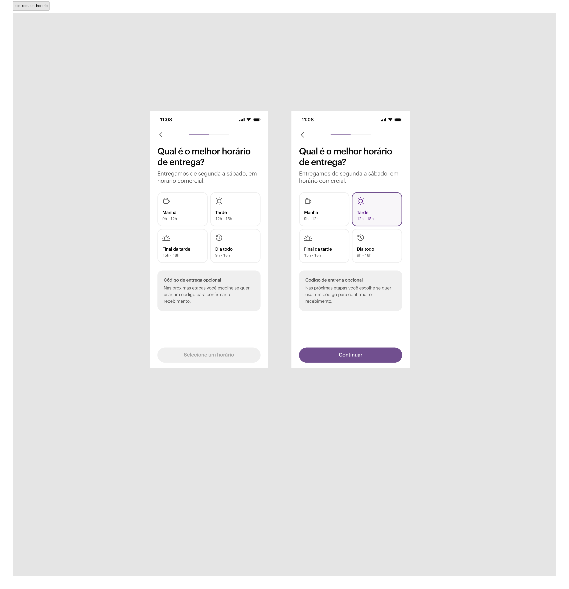
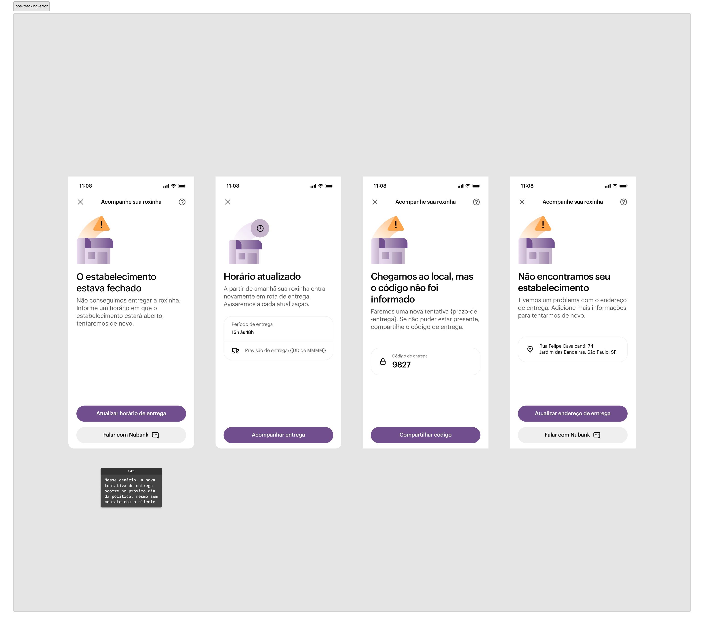

Nubank PJ · 2024–2025
POS Nubank: conteúdo como pilar da estratégia de produto
POS Nubank: content as a product strategy pillar
Como estruturei o POV de content design para o primeiro hardware do Nubank — transformando uma análise competitiva de seis concorrentes em estratégia de narrativa, guidelines e três jornadas completas.
How I shaped the content design POV for Nubank's first hardware — turning a six-competitor analysis into narrative strategy, guidelines, and three complete journeys.
O primeiro hardware do Nubank
Nubank's first hardware product
O mercado brasileiro de maquininhas é um dos mais disputados do setor financeiro. Para o Nubank, o POS representava território inédito: o primeiro produto físico da empresa, com operação dependente de um parceiro externo (Fiserv) e seus próprios processos, prazos e linguagem técnica.
The Brazilian POS terminal market is one of the most competitive in financial services. For Nubank, the POS was uncharted territory: the company's first physical product, with operations dependent on an external partner (Fiserv) with its own processes, timelines, and technical language.
Visão estratégica
Strategic vision
"Nossa maior oportunidade com a maquininha é transformar um dispositivo hoje visto como funcional e impessoal em um parceiro estratégico para o sucesso do cliente PJ. Enquanto o mercado foca na transação, nós focaremos na relação."
"Our greatest opportunity with the POS terminal is to transform a device currently seen as functional and impersonal into a strategic partner for PJ customer success. While the market focuses on the transaction, we'll focus on the relationship."
Como o mercado se comunica em momentos críticos
How the market communicates at critical moments
Analisei Bin, Clover, InfinitePay, Mercado Pago, Itaú e Ton com foco em arquitetura da informação e linguagem — não apenas funcionalidades, mas como cada marca se faz presente nas jornadas críticas do lojista.
I analyzed Bin, Clover, InfinitePay, Mercado Pago, Itaú, and Ton with a focus on information architecture and language — not just features, but how each brand shows up in the merchant's critical journeys.
Narrativa e storytelling
Mercado Pago e Itaú constroem narrativa de ecossistema. Ton e InfinitePay falam de parceria. Clover foca na tarefa — e fica fria.
Narrative & storytelling
Mercado Pago and Itaú build ecosystem narratives. Ton and InfinitePay lean into partnership. Clover focuses on the task — and feels cold.
Tom de voz
Consistência de marca nos líderes. Mas o tom se torna técnico e alarmista nos momentos de erro — quebrando qualquer narrativa de parceria.
Voice & tone
Brand consistency among leaders. But tone turns technical and alarmist in error states — breaking any partnership narrative.
Jornada omnichannel
Mercado Pago se destaca com ativação via QR Code. A falha mais comum: não oferecer envio de recibo por e-mail direto da maquininha.
Omnichannel journey
Mercado Pago stands out with QR Code activation. The most common failure: not offering email receipt directly from the terminal.
Arquitetura da informação
Ton e InfinitePay têm menus enxutos. Mercado Pago e InfinitePay falham na hierarquia visual em telas com dados financeiros complexos.
Information architecture
Ton and InfinitePay have lean menus. Mercado Pago and InfinitePay fail on visual hierarchy in screens with complex financial data.
Comunicação em momentos de erro
O ponto mais fraco de todos os concorrentes. "Erro de Processamento" sem causa, sem ação, sem próximo passo. Universal.
Error state communication
The weakest point across all competitors. "Processing Error" with no cause, no action, no next step. Universal.
O anti-padrão universal
The universal anti-pattern
"Comunicação funcional no happy path. Vaga e não-acionável nos momentos de erro." — Em cada falha de comunicação na jornada do POS, havia um custo operacional direto: reentrega, ticket de suporte, máquina parada.
"Functional communication in the happy path. Vague and non-actionable at moments of error." — Every communication failure in the POS journey had a direct operational cost: re-delivery, support ticket, idle terminal.
Da ferramenta à parceria
From tool to partnership
A análise competitiva revelou quatro oportunidades concretas para diferenciar a experiência da Roxinha. Cada uma com um padrão do mercado, um POV claro e artefatos de content design que sustentam a decisão.
The competitive analysis revealed four concrete opportunities to differentiate the Roxinha experience. Each with a market pattern, a clear POV, and content design artifacts that support the decision.
Narrativa de empoderamento, não transacional
Cada venda é uma conquista para o cliente. A maquininha deve celebrar isso — não apenas informar. Mudamos o tom para ser celebratório em momentos-chave: fechamento do dia, metas batidas, primeira venda.
Empowerment narrative, not transactional
Every sale is an achievement for the customer. The terminal should celebrate that — not just inform. We shifted tone to be celebratory at key moments: end of day, goals hit, first sale.
Comunicação humana em momentos críticos
Um erro é o momento em que o cliente mais precisa de nós. Transformamos a falha em conversa: causa em linguagem humana, ação clara, próximo passo se a ação não resolver.
Human communication at critical moments
An error is the moment customers need us most. We turned failure into a conversation: cause in human language, clear action, next step if the action doesn't resolve it.
Onboarding memorável — o primeiro "uau"
O primeiro contato físico com a marca precisa ser especial, simples e confiável. A narrativa orientadora: "você já sabe usar, é igual ao seu app." Zero fricção, personalização, transparência desde o início.
Memorable onboarding — the first "wow"
The first physical brand touchpoint needs to be special, simple, and trustworthy. The guiding narrative: "you already know how to use it — it's just like your app." Zero friction, personalization, transparency from the start.
Gestão integrada e inteligente
A informação deve fluir entre canais adaptando-se ao contexto de cada um: imediata na maquininha, tática no app, estratégica na web. Arquitetura de informação pensada cross-platform desde o início.
Integrated and intelligent management
Information should flow across channels adapting to each context: immediate on the terminal, tactical on the app, strategic on the web. Cross-platform information architecture from the start.
As três jornadas iniciais do produto
The three initial product journeys
Tive ownership das jornadas de request, tracking e activation no app — co-projetando com os Product Designers e aplicando os princípios do Narrative POV em cada decisão de conteúdo.
I owned the request, tracking, and activation journeys in the app — co-designing with Product Designers and applying Narrative POV principles to every content decision.
Jornada 1 — Request
Journey 1 — Request

Primeira dobra autossuficiente. Drop de até 80% — hierarquia para quem não rola.
Self-sufficient first fold. Up to 80% drop-off — hierarchy for non-scrollers.

Mensalidade contextualizada na decisão. Progressive disclosure como estratégia.
Monthly fee at the decision point. Progressive disclosure as strategy.

Código de entrega apresentado antes da decisão. Quando o toggle aparece, o usuário já conhece o recurso.
Delivery code introduced before the decision. When the toggle appears, the user already knows the feature.

Toggle opcional, desligado por padrão. Segurança para quem quer, sem barreira para quem não precisa.
Optional toggle, off by default. Security for those who want it, no barrier for those who don't.

"Confirmado, [nome], mais um passo juntos." Tom de parceria, código em destaque.
"Confirmed, [name], one more step together." Partnership tone, code prominently displayed.
Jornada 2 — Tracking
Journey 2 — Tracking
Jornada 3 — Activation
Journey 3 — Activation


Guidelines de conteúdo como produto
Content guidelines as a product
Com múltiplos times trabalhando em paralelo e a tensão constante entre a linguagem da Fiserv e a linguagem da marca Nubank, criei as primeiras guidelines de conteúdo do POS como entregável formal — documentadas no Figma, Confluence e integradas ao workflow de IA do time.
With multiple teams working in parallel and the constant tension between Fiserv's language and Nubank's brand language, I created the first POS content guidelines as a formal deliverable — documented in Figma, Confluence, and integrated into the team's AI workflow.
Vocabulário controlado
Campo semântico unificado — menos robô, mais gente. Sem tempo irmão.
Controlled vocabulary
Unified semantic field — less robot, more human.
Tom de voz por momento da jornada
Celebratório na venda, empático no erro, direto na operação.
Tone of voice per journey moment
Celebratory at sale, empathetic at error, direct in operations.
Estrutura de mensagens de erro
Causa (linguagem humana) + ação + próximo passo. Sempre acionável.
Error message structure
Cause (human language) + action + next step. Always actionable.
Princípios de narrativa omnichannel
Imediata na maquininha, tática no app, estratégica na web. Informação que flui entre canais.
Omnichannel narrative principles
Immediate on terminal, tactical on app, strategic on web. Information that flows across channels.
North Star
"% de merchants que completam a jornada completa sem contatar o CX" — a métrica que conectou cada decisão de conteúdo a um impacto operacional real.
"% of merchants who complete the full journey without contacting CX" — the metric that connected every content decision to a real operational impact.
O que eu faria diferente
What I'd do differently
Conteúdo é operação
Cada falha de comunicação tem custo direto. Teria instrumentado indicadores de conteúdo desde o início — especificamente a taxa de contato ao CX por etapa da jornada.
Content is operations
Every communication failure has a direct cost. I would have instrumented content indicators from the start — specifically CX contact rate per journey stage.
Erros são momentos de parceria
O mercado trata erro como exceção técnica. Nós tratamos como momento de relacionamento. Essa virada de perspectiva define toda a arquitetura de mensagens.
Errors are partnership moments
The market treats errors as technical exceptions. We treat them as relationship moments. This perspective shift defines the entire message architecture.
Guideline como produto, não documento
Guidelines precisam ser instrumentadas no processo de criação para ter adoção real. Integrar ao workflow de IA foi o que garantiu uso no dia a dia do time.
Guideline as product, not document
Guidelines need to be embedded in the creation process to achieve real adoption. Integrating into the AI workflow is what ensured daily team usage.
Projeto em fase pré-lançamento. Telas exibidas com fins de portfólio, mantendo confidencialidade sobre informações estratégicas e comerciais.
Product in pre-launch phase. Screens shared for portfolio purposes, maintaining confidentiality over strategic and commercial information.